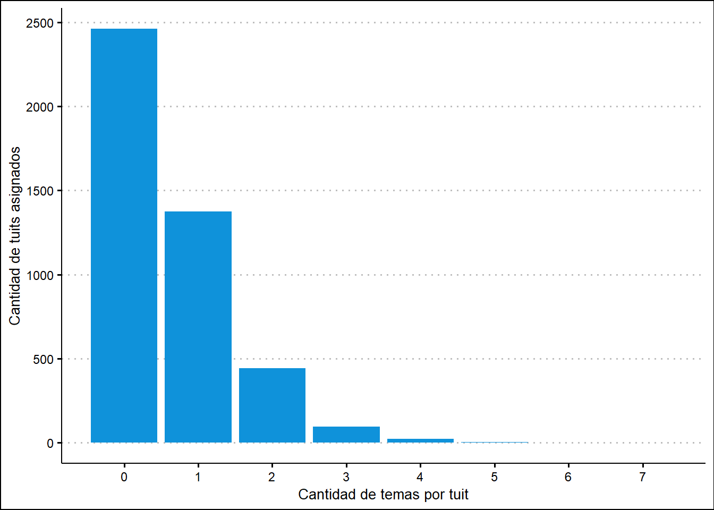

1: Rastreo manual de temas por palabras
Una primera forma de rastrear acerca de qué se han pronunciado nuestros emisores es identificar “palabras clave” que podemos presumir asociadas a un determinado asunto.
Ahora bien, determinar qué palabras corresponden a qué temas no es tarea fácil. Trazar límites entre cuestiones implica encorsetar un objeto fluido, creativo y ambiguo como el lenguaje en categorías estancas y, en nuestro caso, abiertamente arbitrarias, ya que para este ejercicio hemos optado por definirlas a priori.
En breve, utilizaremos una “lista de palabras” que consideramos usualmente asociadas a “temas”, y veremos qué tanto coinciden o no los tuits de los candidatos con las palabras de esta lista y, por ende, con los asuntos o problemáticas previamente identificadas.
Sin dudas, existen técnicas menos arbitrarias para diagramar estos “listados de palabras”. Se podría, por caso rastrearlos a partir de una muestra más reducida de nuestros propios datos, o, inversamente, en una base más amplia, como sean notas de prensa. A nuestros fines exploratorios, baste la estrategia elegida.
A continuación, importamos un data frame cuyas variables son los “temas” que vamos a buscar, y cuyas observaciones constituyen los términos que asociamos a cada tema1. Inspeccionamos cómo está estructurada más abajo.
# importamos la base
temas_palabras <- read_xlsx("temas_palabras.xlsx")
# inspeccionamos la base
str(temas_palabras)## tibble [102 x 40] (S3: tbl_df/tbl/data.frame)
## $ agropecuario : chr [1:102] "aceituna" "aceituno" "agropecuaria" "agropecuario" ...
## $ industria : chr [1:102] "industria" "industrial" "fábrica" "fábricas" ...
## $ mineria : chr [1:102] "carbón" "cobre" "hierro" "litio" ...
## $ adicciones : chr [1:102] "abstinencia" "adicción" "adicto" "adictos" ...
## $ alumbrado : chr [1:102] "iluminación" "luminaria" "luminarias" "alumbrado" ...
## $ caminos : chr [1:102] "acera" "aceras" "adoquin" "adoquinado" ...
## $ competitividad : chr [1:102] "competitiva" "competitividad" "competitivo" NA ...
## $ coparticipación : chr [1:102] "coparticipa" "coparticipación" "coparticipable" "coparticipables" ...
## $ corrupción : chr [1:102] "afana" "anti ético" "antietico" "anti-ético" ...
## $ cultura : chr [1:102] "arte" "artes" "artista" "artistas" ...
## $ deporte : chr [1:102] "ajedrez" "atleta" "atletas" "atletico" ...
## $ ddhh : chr [1:102] "abuelas de plaza de mayo" "amnistía" "dd.hh." "ddhh" ...
## $ servicios_agua : chr [1:102] "agua" "alcantarilla" "alcantarillado" "cloaca" ...
## $ catástrofes_naturales: chr [1:102] "inundaciones" "inundacion" "incendios forestales" "incendio forestal" ...
## $ desocupación : chr [1:102] "cesante" "cesantes" "cesantía" "cesantías" ...
## $ educación : chr [1:102] "alfabetización" "alfabetizar" "alumna" "alumnas" ...
## $ electoral : chr [1:102] "balotaje" "ballotage" "boleta" "boletas" ...
## $ energía : chr [1:102] "axion" "barrick gold" "British Petroleum" "btu" ...
## $ género : chr [1:102] "feminazi" "femicidio" "feminicidio" "feminista" ...
## $ higiene : chr [1:102] "aseo" "barren" "barrer" "barrido" ...
## $ inflación : chr [1:102] "deflación" "hiperinflacion" "indec" "inflación" ...
## $ telecomunicaciones : chr [1:102] "satelite" "telecomunicaciones" "fibra optica" "espectro radioelectrico" ...
## $ obra_pública : chr [1:102] "infraestructura" "mantenimiento" "mejoras" "mejora" ...
## $ comercio : chr [1:102] "balance comercial" "balanza comercial" "deficit comercial" "superavit comercial" ...
## $ inversion : chr [1:102] "inversión" "inversiones" "inversionista" "inversor" ...
## $ jubilaciones : chr [1:102] "82% móvil" "adulto mayor" "afjp" "anses" ...
## $ justicia : chr [1:102] "calumnia" "camara civil" "camara comercial" "camaristas" ...
## $ vivienda : chr [1:102] "alquiler" "alquileres" "casa propia" "crédito hipotecario" ...
## $ turismo : chr [1:102] "ecoturismo" "agroturismo" "enoturismo" "tour" ...
## $ transporte : chr [1:102] "Aerolineas Argentinas" "low cost" "aeroparque" "aeropuerto" ...
## $ tc : chr [1:102] "atraso cambiario" "cepo" "compra de dolares" "compran dolares" ...
## $ impuestos : chr [1:102] "abl" "Afip" "deficit fiscal" "gasto publico" ...
## $ seguridad : chr [1:102] "armas" "arma blanca" "asaltante" "asaltantes" ...
## $ salud : chr [1:102] "ambulancia" "ambulancias" "asistencia medica" "ayuda medica" ...
## $ rrii : chr [1:102] "acuerdo bilateral" "acuerdos bilaterales" "acuerdo multilateral" "acuerdos multilaterales" ...
## $ pobreza : chr [1:102] "desigualdad" "desnutrid" "desnutricion" "distribución del ingreso" ...
## $ gobierno_abierto : chr [1:102] "abrirse al ciudadano" "acceso a la información" "app" "apps" ...
## $ narcotráfico : chr [1:102] "cargamento" "cocaína" "crimen organizado" "dea" ...
## $ ambiente : chr [1:102] "ambiental" "ambientales" "ambientalista" "area protegida" ...
## $ deuda : chr [1:102] "deuda" "financiamiento" "default" "acreedor" ...Para identificar en qué medida los términos previamente identificados “aparecen” en los tuits, procederemos a descomponer estos últimos en palabras. Nuestro objetivo será, en el próximo paso, contabilizar las “coincidencias”.
candidatos_tokenizadas <- joined_candidatos %>%
tokenizarTextoTuits() %>%
left_join(datos_base)Tenemos entonces dos conjuntos de datos:
- Temas asociados a listas de palabras.
- Una lista de palabras asociadas a tuits emitidos por los candidatos.
En el código a continuación, procedemos de manera iterativa para rastrear las coincidencias entre ambos.
Para cada columna (cada tema) en tema_palabras, recorremos la lista de palabras extraída de la base con tuits de los candidatos. Durante cada vuelta de nuestro recorrido, añadiremos una nueva variable a esta última: sus filas contendrán un “1” si la palabra del tuit pertenece al asunto en cuestión, y un “0” si no hay coincidencias.
Más abajo, una vez finalizadas todas las vueltas, y por ende rastreadas todas las posibles coincidencias, modificamos la disposición de nuestros datos con
pivot_longer. De este modo, nuestra base resultante constituye un data frame cuyas observaciones (filas) son las combinatorias palabras-tema. Esta estructura nos resultó más adecuada al análisis posterior.
temas_palabras_match_tokens <- candidatos_tokenizadas %>%
limpiarTokens(palabras_web = TRUE, hashtags = TRUE, mentions = TRUE) %>%
select(screen_name, tweet_id, tokens)
# calculando coincidencias
for (columna in 1:ncol(temas_palabras)) {
testear_coincidencias <- na.omit(as.data.frame(temas_palabras[columna])) %>%
rename( palabras = colnames(temas_palabras[columna]) )
new <- ifelse( temas_palabras_match_tokens$tokens %in% testear_coincidencias$palabras,
"1",
"0")
temas_palabras_match_tokens[ , ncol(temas_palabras_match_tokens) + 1] <- new # Append new column
colnames(temas_palabras_match_tokens)[ncol(temas_palabras_match_tokens)] <- colnames(temas_palabras[columna]) # Rename column name
}
# hacemos matriz "long"
temas_palabras_match_tokens_long <- temas_palabras_match_tokens %>%
pivot_longer(!c(screen_name, tweet_id, tokens),
# una fila para cada combinación tuit/token/tema
names_to = "temas", values_to = "count") %>%
# con una columna (count) que indica si está presente el tema en ese token-tuit
filter(count==1)
# nos quedamos sólo con los tokens asignados a un temaAhora sí, estamos en condiciones de inspeccionar los resultados.
Rastrearemos primero cuántas coincidencias hubo por tuit. Recordemos que habíamos descompuesto los tuits en palabras, y buscado matches entre estas últimas y la lista definida previamente. Entonces, en un tuit puede haber desde ninguna o una única palabra asociada a un tema, hasta varias.
# inspeccionando resultados / primera aproximacion
# cantidad de coincidencias por tuit
coincidencias_tweets <- temas_palabras_match_tokens_long %>%
group_by(tweet_id) %>%
dplyr::summarise(cantidad_coincidencias = sum(as.integer(count))) %>%
left_join(joined_candidatos)
# cantidad de coincidencias por tema por tuit
ncoincidencias_tema_tweets <- left_join(joined_candidatos %>%
filter(Campaña == 1 ),
temas_palabras_match_tokens_long %>%
dplyr::count(tweet_id, temas)
) %>%
select(tweet_id, screen_name, text, temas, n) %>%
dplyr::rename(coincidencias_tema_tuit = "n")Veamos un ejemplo de un tuit con múltiples coincidencias.
# ejemplo: tuit con muchas coincidencias sobre un mismo tema
ejemplo1 <- ncoincidencias_tema_tweets %>%
arrange(desc(coincidencias_tema_tuit)) %>%
head(1)
twitterwidget(as.character(ejemplo1$tweet_id))Con estos datos ya podemos explorar los temas más populares. Es decir, los temas que tuvieron más cantidad de coincidencias.
Atención: recordemos que se trata de una cuenta abiertamente arbitraria. La cantidad de palabras que asociamos a cada tema es variable. Además, nada dice que todas sean igual de importantes en un sentido sustantivo. De todos modos, no está de más el ejercicio.
# temas mas populares
temas_populares <- fct_count(ncoincidencias_tema_tweets$temas) %>%
arrange(desc(n)) %>%
dplyr::rename(Tema = "f", "Cantidad de tuits" = "n") %>%
na.omit()
head(temas_populares, 10) %>%
gt::gt() %>%
gt::tab_header(
title = "Temas más populares entre los candidatos",
subtitle = "(conteo manual)") %>%
gt::tab_style(
style= cell_fill(color = "#00BFFF", alpha = 0.5),
locations = cells_title(groups = c("title", "subtitle"))) %>%
gt::tab_style(
style= cell_fill(color = "#E9EDF1", alpha = 0.5),
locations = cells_body()) %>%
gt::tab_style(
style= cell_text(
color = "#050505",
align = "center",
v_align = "middle",
weight = "lighter"),
locations = cells_body())| Temas más populares entre los candidatos | |
|---|---|
| (conteo manual) | |
| Tema | Cantidad de tuits |
| educación | 277 |
| obra_pública | 258 |
| electoral | 196 |
| vivienda | 174 |
| salud | 164 |
| gobierno_abierto | 142 |
| seguridad | 113 |
| caminos | 112 |
| cultura | 112 |
| deporte | 88 |
Sigamos con algunos cálculos más relevantes a nuestros fines. Dada la anterior advertencia, y el origen de nuestros datos, encontramos más provechoso trabajar con los tuits antes que con las palabras dispersas.
Reuniremos otra vez las palabras en tutis, entonces, e identificaremos a qué temas fue asignado cada tuit con base en sus palabras.
# cantidad de temas por tuit
ntemas_tweets <- temas_palabras_match_tokens_long %>%
dplyr::count(tweet_id, temas) %>%
dplyr::mutate( tweet_id = as.factor(tweet_id))
# unimos con base de datos
cantidad_temas_tuit <- left_join(joined_candidatos %>%
filter(Campaña == 1 ) %>%
dplyr::mutate(tweet_id = as.factor(tweet_id)),
fct_count(ntemas_tweets$tweet_id) %>%
dplyr::rename(tweet_id = "f")) %>%
select(tweet_id, screen_name, text, n) %>%
mutate_if(is.numeric, funs(ifelse(is.na(.), 0, .))) %>%
dplyr::rename(cantidad_temas_tuit = "n")Cabe la posibilidad de que un único tuit haya sido asignado a más de un tema. Calculamos esto en el último tramo del código recién expuesto. Abajo exponemos el tuit asignado a más temas de nuestra base de datos.
# ejemplo tuit con muchos temas
ejemplo2 <- cantidad_temas_tuit %>%
arrange(desc(cantidad_temas_tuit)) %>%
head(1)
twitterwidget(as.character(ejemplo2$tweet_id))Este tuit fue asignado a 7 temas: desocupación, obra pública, vivienda, deuda, educación, salud y seguridad. ¿No está tan errado, no?
Veamos, en el agregado de nuestra base, a cuántos temas fue asignado cada tuit.
# histograma descriptivo / cantidad de temas por tuit
plot_cantidad_temas_tuit <- cantidad_temas_tuit %>%
ggplot(aes(cantidad_temas_tuit)) +
geom_bar(fill = "#0F92DA") +
theme_clean() +
labs(x = "Cantidad de temas por tuit",
y = "Cantidad de tuits asignados") +
scale_x_continuous(breaks = seq(0, 7, 1))
plot_cantidad_temas_tuit
En el gráfico emerge una de las principales debilidades de este abordaje: un gran número de tuits no fue asignado a ningún tema. Hay margen para perfeccionar el desempeño de estos cálculos en el futuro.
En cualquier caso, para trabajar en lo que sigue nos quedaremos con los tuits que fueron asignados a un único tema. Hemos pasado de las palabras, a los tuits. Ahora, haremos el salto hacia los emisores, y algunas de las características que los definen.
tuits_con_unico_tema <- ncoincidencias_tema_tweets %>%
dplyr::mutate(tweet_id = as.factor(tweet_id)) %>%
left_join(cantidad_temas_tuit) %>%
filter(cantidad_temas_tuit == 1 )
temas_en_tuits_con_unico_tema <- fct_count(tuits_con_unico_tema$temas)Con esta base, podremos evaluar fácilmente algunas similitudes y diferencias entre los candidatos. Vamos a ensayar algunos ejercicios visuales.
En primer lugar, identificamos cuántos tuits en relación a cada tema emitió cada candidato. Se trata de una cuenta en términos absolutos.
# temas preferidos por candidato
# cuenta absoluta
# ¿cuantos tuits sobre x tema emitio i candidato?
temas_candidatos_absolutos <- ncoincidencias_tema_tweets %>%
dplyr::count(screen_name, temas) %>%
na.omit(n) %>%
left_join(datos_base)
plot_temas_candidatos_absolutos <- temas_candidatos_absolutos %>%
dplyr::mutate(screen_name = as.factor(screen_name)) %>%
ggplot(aes(x = fct_reorder(screen_name, Distrito), y = temas, size= n, colour = Distrito)) +
geom_count() +
theme_minimal() +
theme(axis.text.x = element_text(angle = 90, hjust = 1, vjust = 0.5),
legend.position = "none") +
labs(x = "", y = "")En el gráfico a continuación, la cantidad de tuits emitidos por cada candidato sobre cada tema está dado por el tamaño del círculo :black_circle:.
plot_temas_candidatos_absolutos
Quizás sea más claro graficar y calcular el peso relativo de cada tema para cada candidato. Lo hacemos a partir del código a continuación.
# cuenta relativa
# ¿qué proporción de los tuits emitidos por i candidato fueron a x tema?
# eventualmente podemos hacer esta cuenta más atrás-
# calculamos cantidad de tuits emitidos por candidato
cantidad_tuits_candidato <- joined_candidatos %>%
subset( Campaña == 1 ) %>%
dplyr::count(screen_name) %>%
rename(tuits_emitidos_totales = "n")
# unimos esta base para que la que consigna los temas por candidatos
# tenga una columna con el total de tuits emitidos
temas_candidatos_relativos <- temas_candidatos_absolutos %>%
left_join(cantidad_tuits_candidato) %>%
dplyr::mutate(n_relativo = n/tuits_emitidos_totales*100)
plot_temas_candidatos_relativos <- temas_candidatos_relativos %>%
ggplot(aes(x = fct_reorder(screen_name, Cargo), y = n_relativo, fill = temas)) +
geom_col(position = "stack") +
theme_minimal() +
theme(axis.text.x = element_text(angle = 90)) +
theme(legend.position = "bottom",
legend.key.size = unit(0.4, 'cm'), #change legend key size
legend.title = element_blank(),
legend.text = element_text(size=7)) +
labs(title = "Proporción de tutis dedicados a cada tema",
subtitle = "por candidato",
x = "",
y = "%")En el gráfico que sigue, chequeamos qué proporción de los tuits emitidos por cada candidato corresponde a cada tema, según nuestras estimaciones. El “espacio en blanco” arriba de las barras indica cuántos tuits de los emitidos por cada candidato no fueron asignados a ninguna temática en particular.
plot_temas_candidatos_relativos
Finalmente, un último ejercicio que puede resultar interesante consiste en identificar, de la lista de términos previamente provista, cuáles fueron las palabras más mencionadas por tema.
Ensayamos el siguiente gráfico para la temática “vivienda”, una de las más mencionadas por nuestros candidatos.
# y de hacer matches por palabras
# hacemos para tema vivienda
matches_vivienda <- temas_palabras_match_tokens_long %>%
subset(temas == "vivienda") %>%
dplyr::count(screen_name, tokens)
matches_vivienda_paralell <- matches_vivienda %>%
gather_set_data(1:2)
plot_matches_vivienda <- ggplot(matches_vivienda_paralell,
aes(x, id = id, split = y, value = n)) + # INICIA GRAFICO
geom_parallel_sets(aes(fill = screen_name), alpha = 0.7, axis.width = 0.1, show.legend = FALSE) +
theme_minimal() +
geom_parallel_sets_axes(axis.width = 0.1, color = "lightgray", fill = "white") +
geom_parallel_sets_labels(colour = 'black', angle= 0) +
theme_no_axes() +
theme(panel.background = element_rect(fill = "white", colour = "white"))En la representación visual que sigue, observamos algunas diferencias relevantes. Por ejemplo, dentro de este tópico, M. Lammens, candidato porteño, habla más sobre los “alquileres”, mientras que candidatos de provincias del interior versan más sobre las “villas”. La diferencia puede ser indicativa de la estructura demográfica de cada distirito, y/o de la agenda de políticas en discusión durante la campaña.
plot_matches_vivienda
Sería interesante repetir la tarea para otros asuntos. Pero, por ahora, consideramos que hemos exprimido suficientemente esta estrategica. Además, hemos hecho hincapié en sus múltiples debilidades. Ensayemos otra técnica.